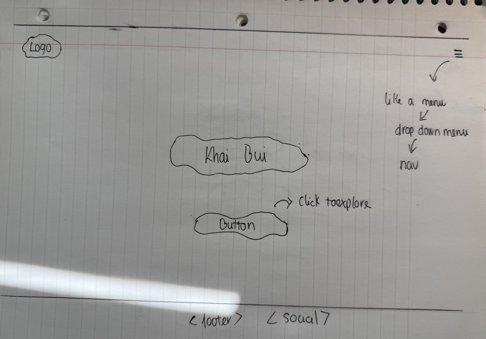
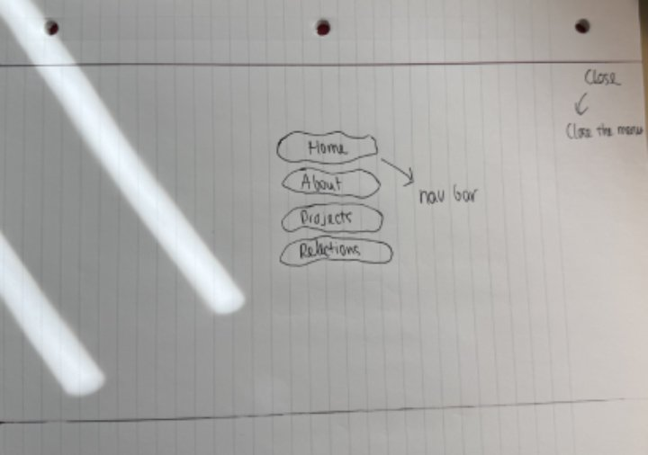
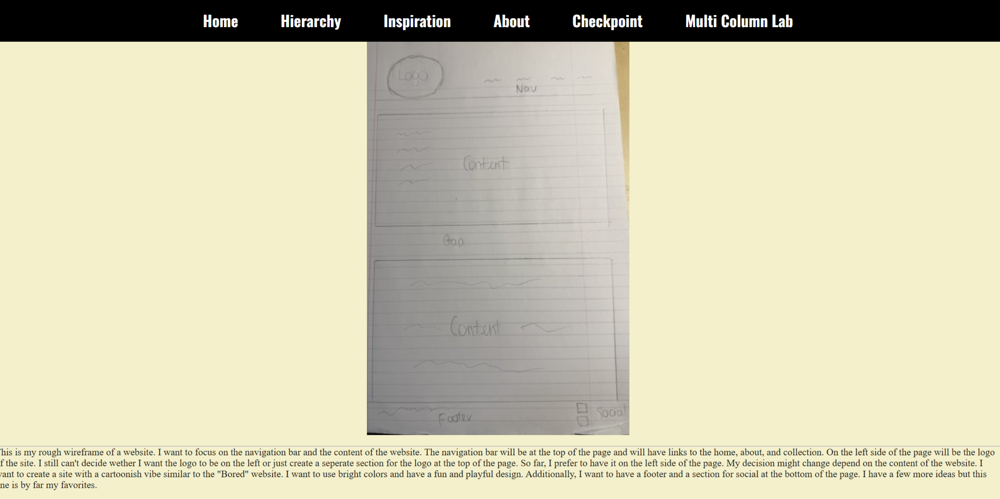

I think the idea of creating an interactive sketchbook is interesting because I will be able to update my work as I progress. I can also use it to document my errors and successes throughout the coding process. One of my biggest concern about the sketchbook is that I might mess up some of the work because of its large information density. As a result, I label everything very clearly. I try to make it as simple as possible so I don't have to worry about getting confused by my own work.
For my navigation section, I decided to use a vertical list to links different sections of my sketchbook. I also use the different background colors to differentiate them. I also wanted to make a box for each section but I need to review on how to do that because I kind of forgot about it. For the font, I chose the monospace because that is my favorite font. Right now, the website still look very messy but as time progresses, I hope it will become more organized. One of the major changes when the navigation became more visual consistent is that it will give the viewers a better understanding of the structure and flow of the content.
I still have the original wireframe on the main page of the website. However, I make many changes to the navigation section compare to last week. I completely change its style to a more complicated look. I changed the background color to black and change the text color to white. I also applied what I learned from class to the nav bar. I didn't create any border, but I adjusted the padding and margins of the bar. In my opinion, the changes was significant. I really like it. Some of the thing that I need to improve on is that the color of the main page and there are too many blank spaces on the page, I need to find something to fill it in. For other pages, I still need to organize the content, images, and fonts to make it match with my main page.
This is my first time using Github and it was quite confusing. The login, getting access, and creating new repository was simple. However, uploading my sketchbook to github was a pain because it didn't let me. I had to try it over and over again for it to work. I selected all the file and type in push then fetch it. Another thing that pissed me off was that it took way to long for the changes to appear on the website. For eaxmple, I adjust and change some code in VS and push them to Github, but they usually take around 15-30 minutes for the change to happen on the website. This lowkey stress me out. I eventually got used to it.

The image above was my original idea of how my website would look like. However, I didn't like the way it look, it looked like it missing a lot of thing because there were many white spaces. As a result, I decided to redo everything from the beginning.
The current look is the final look of my website, and I'm really satisfied with how it turned out. For the background color, I decide to go with black, white, and dark red because those are my favorite colors and they work well together. For my navigation section, instead of create like a column or a row, I decide to create an interactive menu on the top right of the screen. This is by far my favorite part to work on because it is super unique compare to my other ideas. When people click on the "hamburger", it will have a dropdown menu for to show the actual navigation which includes the Home, About, Projects, and Reflections page.
Next thing is the About Page. I use the similar styles as other pages to create some form of dynamic.
After the About Page is the Projects section. I spent a lot of time putting everything together. I linked every single project from the start of the class till now into one page. When viewers click on each box, they can see the project. One thing that I disliked about this section was the linking different page together. Sometimes, VS decided to stop working and I couldn't link the pages together. Fortunately, it decided to work the next day.
Last part of the website is the reflection page. This page is just a whole bunch of text and it looks too boring so I decide to add some wireframe images to make it easier for the viewer to read.